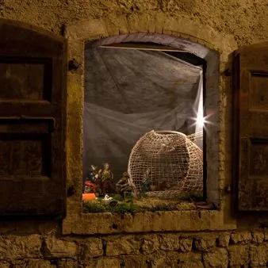

da dom 29 nov a dom 10 gen
La magia del Natale: Nativity scenes in Polcenigo
Placed in the windows of the houses along the streets and set in the most characteristic corners of the village, nativity scenes and Christmas decorations create an enchanted atmosphere and highlight the rich historical, artistic, and architectural heritage of the ancient…
 Indicazioni
Indicazioni
- Costi e prenotazioni
- Costo non indicato · Prenotazione non indicata
- Programma
- Programma da verificare. Apri la fonte ufficiale per orari e possibili aggiornamenti.
- In caso di maltempo
- Nessuna indicazione specifica pubblicata.
- Note
- Acquisito automaticamente dalla fonte.
L’EVENTO
Descrizione completa
Placed in the windows of the houses along the streets and set in the most characteristic corners of the village, nativity scenes and Christmas decorations create an enchanted atmosphere and highlight the rich historical, artistic, and architectural heritage of the ancient village of Polcenigo.
From one charming view to another, visitors can immerse themselves in this wonderful tradition, letting themselves be carried away by the beauty of the nativity scenes and the Christmas initiatives designed for both adults and children.
Historic village of Polcenigo, between Piazza Plebiscito and the streets of the old town
Outdoor Nativity scenes can be visited at any time; a visit at dusk is especially recommended.
Free guided tours (in Italian, German and English) are available for groups of 10 to 50 people on Saturdays and Sundays, subject to prior booking by email at info@borgocreativopolcenigo.it.
Voluntary donations to the Borgo Creativo Association are welcome.
Visitors can also take part in the following free guided excursions, available upon reservation, to discover the Nativity scenes:
Car and coach parking is available in the parking area adjacent to the Church of San Rocco.
IL PROGRAMMA
Programma e orari
Appuntamenti raccolti dalle fonti elencate. Dove manca un orario, non è ancora disponibile in questa scheda.
Programma pubblicato
- 3:00 p.m. - 6:00 p.m.
INFORMAZIONI UTILI
Prima di partire
- Controllare la fonte prima di partire.
ORGANIZZAZIONE